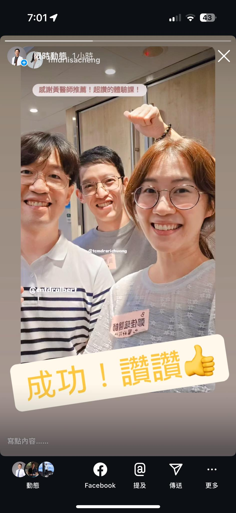

當初推薦我的好朋友家醫每一天｜佳瑤醫師的の健康手札 跟溫醫師來參加一日工作坊，收…
當初推薦我的好朋友家醫每一天｜佳瑤醫師的の健康手札 跟溫醫師來參加一日工作坊，收穫滿滿，開開心心的一天，希望能帶回診間幫助患者改善疼痛！
專業間的交流學習，互相成長！非常棒的一天👍
希望參加的大家都收穫滿滿開開心心🥰
肌筋膜脈學中醫應用

中醫徒手・內針傷整合・精準全人醫療
當初推薦我的好朋友家醫每一天｜佳瑤醫師的の健康手札 跟溫醫師來參加一日工作坊，收穫滿滿，開開心心的一天，希望能帶回診間幫助患者改善疼痛！
專業間的交流學習，互相成長！非常棒的一天👍
希望參加的大家都收穫滿滿開開心心🥰
肌筋膜脈學中醫應用
